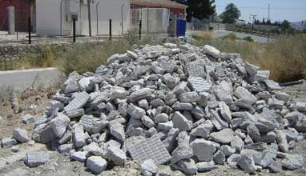
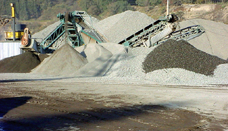

Señor inversionista, ingeniero o empresario: Usted debe considerar muy especialmente la importancia de la experticia en esta materia. Para asegurarle un servicio de calidad, contamos con trabajadores capacitados y con experiencia, y las herramientas y maquinaria necesaria para este tipo de servicios, tales como mini cargadores y retroexcavadoras, entre otras. El servicio integral incluye: inspección en terreno para factibilidad de faena, confección de presupuesto, demolición propiamente tal, con control de plagas y retiro de escombros. ¡Solicite su cotización!
SERVICIO DE RETIRO Y DISPOSICIÓN DE ESCOMBROS Y RESIDUOS SÓLIDOS.

Para estas labores contamos con mini cargadores, retroexcavadoras, camiones tolva de ocho y quince metros cúbicos (8 y 15 mt³) y contenedores estacionarios o multibacket de nueve metros cúbicos (9mt³). Este variado abanico de recursos le permite la flexibilidad adecuada para el requerimiento técnico específico de cada etapa en su proyecto, facilitando una correcta planificación. Respecto a la disposición final de los residuos es importante hacer presente el absoluto cumplimiento sanitario y medioambiental aplicable a esta actividad, lo que se traduce principalmente en la tramitación y entrega de los certificados emitidos por los botaderos autorizados con los cuales mantenemos relaciones comerciales.¡Llámenos!
SERVICIO DE VENTA, DESPACHO Y MOVIMIENTO DE ÁRIDOS

Este servicio contempla materiales constructivos tales como: Arena fina, gruesa y borra, grava, gravilla, ripio, bolones, estabilizado, pomacita, maicillo y tierra, entre otros por los cuales nos puede consultar. Nuestros volúmenes mínimos de entrega son de (8mt³). ¡Contáctenos!